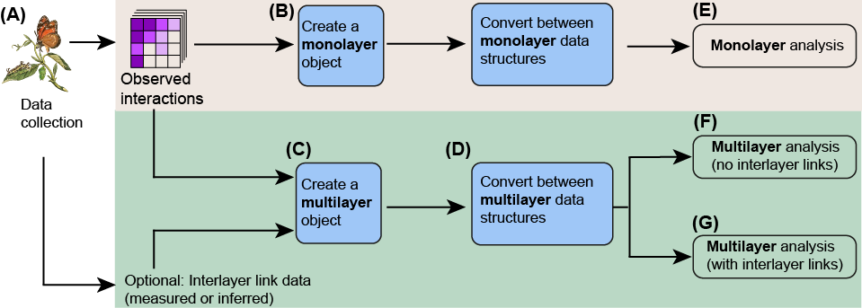
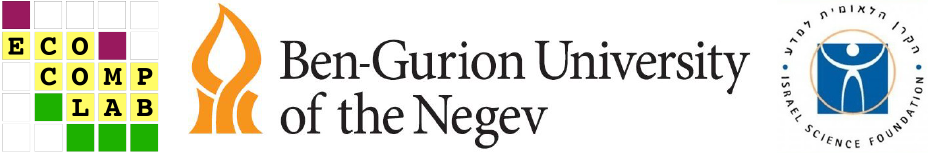

This website contains complete examples for working with monolayer and multilayer network data with the package EMLN. It is rather self-explanatory but we recommend to read the paper Practical guidelines and the EMLN R package for handling ecological multilayer networks to really understand it. The general workflow is described in the figure below. We start with monolayer networks, which are the basis for handling multilayer networks. Our paper and this website focus on handling data (blue rectangles in the figure), and not on analysis.

Frydman N, Freilikhman S, Talpaz I, Pilosof S. Practical guidelines and the EMLN R package for handling ecological multilayer networks. Methods in Ecology and Evolution. 2023. DOI:10.1111/2041-210X.14225. Please cite the paper when implementing the guidelines we describe or when using the package, this helps us a lot!
The EMLN package requires R version 4.1.0 and up, and depends on several packages. The package is installed directly from CRAN. Run this code to install and load it:
install.packages("emln")
library(emln)This is a technical reference. Therefore, we assume at least some basic experience with monolayer network analysis. Also, some familiarity with the basic concepts and theory of multilayer networks is highly recommended. Some recommended reading if you do not have that background:
Ecological multilayer networks
Mathematics of multilayer networks
Visual guide visual guide by Manlio De Domenico
